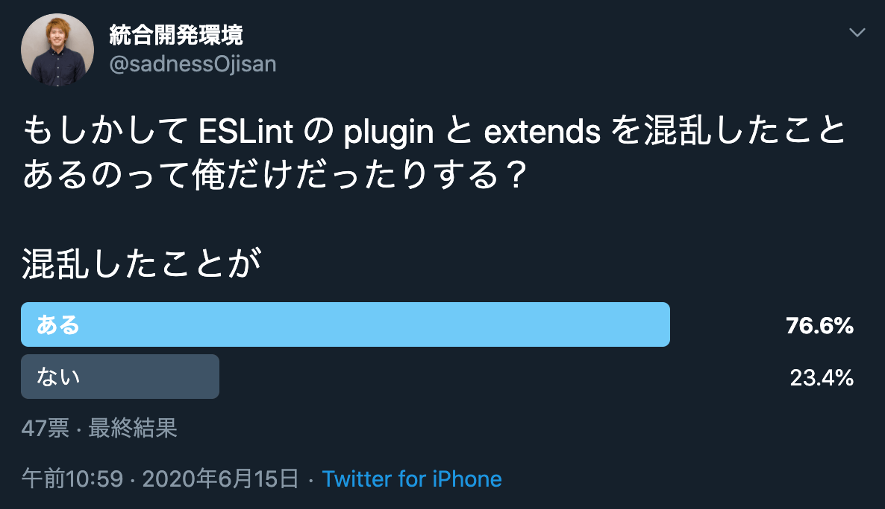
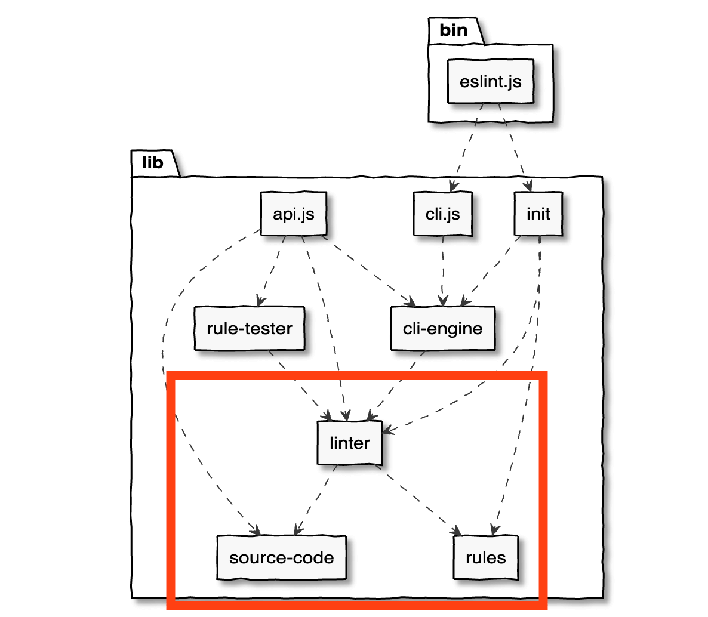
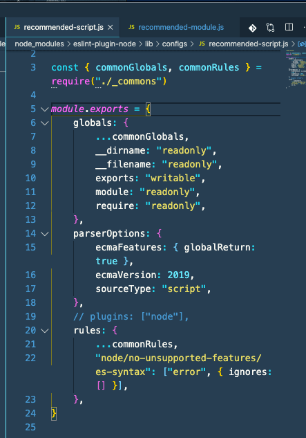
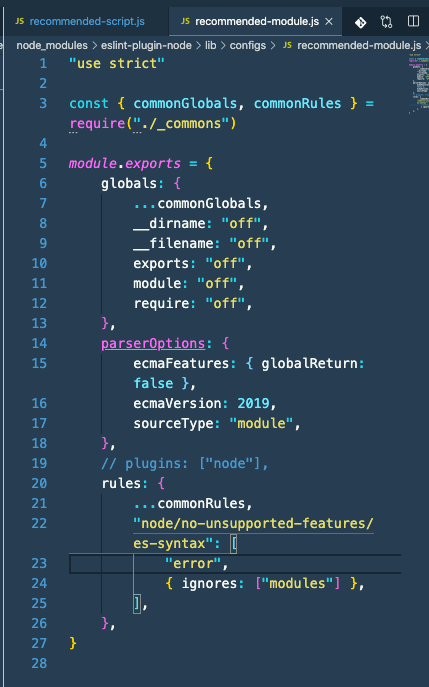
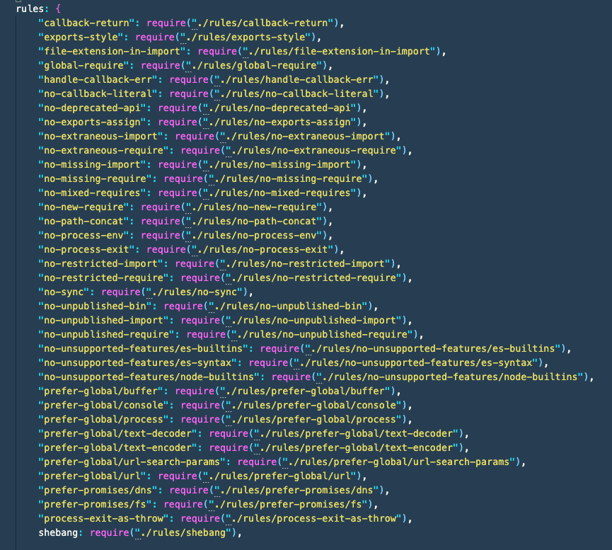

ESLint の Plugin と Extend の違いを説明できますか？ 違いを知っている人からすれば（というかそもそも全然違うものなので）、「え、それ悩む？」となるところなのですが、ユーザー向けドキュメントには Plugin の定義が書かれておらず、Extend の説明も不十分で、さらに Plugin の設定をする Extend なんてものがあるお陰で、慣れないうちは混乱すると思います。 特に最後の事象は個人的には印象的で、「Plugin の設定をしていないのに Plugin が設定されている。Plugin って何？」といった混乱の原因になっていました。 この混乱は ESLint の全体感を掴むと混乱しなくなるのでそういう話を書きたいと思います。
実際に混乱してた人も多そうです（6/24 更新) 
結論を言うと、Extend は Extend です。設定を Extend する役割を持っています。Plugin は Plugin です。設定を Plug する役割を持っています。
ESLint はルールを用いてコードを静的検証する
ESLint の役割はソースコードの静的検査です。
module.exports = {
...,
rules: {
"quotes": [2, "double"],
...
}
}
こういう感じで 設定ファイルに rule を書いておけば、linter がソースコードを検証してくれます。 ここでルールに反したものは report するというのが ESLint の大きな仕組みです。 設定ファイルにはたくさんの項目がありますが、それらは rule(その実体はコードを検証して結果を report する関数)の実行を支えるものです。 rule を中心に考えると ESLint の理解はしやすくなります。(は言い過ぎかもしれない)

FYI: https://eslint.org/docs/developer-guide/architecture
なぜ Extend と Plugin の説明で rule の話から始めたかと言うと、それらは共に rule を制御する機能だからです。 Plugin は rule(つまり静的検証する関数そのもの) を追加でき、Extend は rule の setting を設定できます。
Plugin はルールを追加する
Plugin が何か、ユーザーガイドの configuring-plugins を見てみましょう。
ESLint supports the use of third-party plugins. Before using the plugin, you have to install it using npm. To configure plugins inside of a configuration file, use the plugins key, which contains a list of plugin names. The eslint-plugin- prefix can be omitted from the plugin name.
うーん、「plugin とは何か・何ができるか」が書かれていなさそうです。（本当？私が見つけられていないだけ？） 適当にググると非公式ですが「ルールセットを持つ」みたいな説明はヒットします。 また、プラグイン開発者向けドキュメントのworking-with-plugins をみると、
- Plugins can expose additional rules for use in ESLint.
- Plugins can expose additional environments for use in ESLint.
- You can also create plugins that would tell ESLint how to process files other than JavaScript.
といった説明は見つかります。 どうやら plugin は rules, environments, processors の実装や設定を提供できるようです。 一般的に plugin は何かを注入する機構なので、ここでもそれらを注入してくれるものだと考えておきましょう。 実際 plugin の実装を読む限りはルールを注入しており、そのような使われた方が多いと言う点は合意が得られると思います。
Extend の役割について
Extend の説明を公式ドキュメントで見てみましょう。
Configuring ESLint というドキュメントのExtending Configuration Filesには A configuration file can extend the set of enabled rules from base configurations.とあり、どうやらルールを拡張できる機能と説明しています。
Extend はルールの setting をする
たとえばこのような設定ファイルがあるとします。
module.exports = {
extends: "eslint:recommended",
...
rules: {},
}
この extends はeslint --initから生成される値とも同じなので見覚えもあるかもしれません。
これは ESLint のルールの推奨設定(チェックマークが付いているもの)を ON にする役割を持っています。
recommended だけが一人歩きしている感じもあるのですが、all といった設定もありそれを使うと全 rule を ON にすることだってできます。 この recommended や all は config として extends 開発者は定義できます。
つまり、Extends はルールの ON/OFF 設定などルール自体に対する設定をするのが役割のようです。 eslint 本体の recommededの実装をみる限りもそのような雰囲気があります。
module.exports = {
rules: Object.assign(
{},
...Object.keys(builtInRules)
.filter(ruleId => builtInRules[ruleId].meta.docs.recommended)
.map(ruleId => ({ [ruleId]: "error" }))
),
}
あくまでも rule の設定を切り出しているかのように見えます。 ただし、実際には rule の追加以外のこともでき、実際にやっている例もあります。 それが Extend と Plugin の混乱にもつながってきます。
Extends はルールの setting 以外もする
Extends はルールを拡張できる機能として説明されてはいますが、私は extends を使った経験からしてこの説明は不十分だと感じました。
そこでプラグイン開発者向けのページも確認してみましょう。
Using a Shareable Config には Shareable configs are designed to work with the extends feature of .eslintrc files. とあり、どうやら shareable config は extends と協調する機能 のようです。
ユーザー向けドキュメントのExtending Configuration Filesを再度確認すると、
The extends property value is a string that specifies a configuration (either a path to a config file, the name of a shareable config, eslint:recommended, or eslint:all)
(↑ 原文と比べ少しだけ説明を端折っています)
とあり、Extends は config file の path もしくは shareable config の名前を受け取ることができます。 どうやら、extends で指定されているものは shareable configです。
shareable config とは何か
では shareable config とは何かを探ってみましょう。 ドキュメントには Shareable configs are simply npm packages that export a configuration object. とあります。 つまり設定を object として export しているライブラリを指すようです。
さらに読み進めると Make sure the module name begins with eslint-config-, such as eslint-config-myconfig. ともあります。 皆さんも経験あると思うのですが、ESLint の設定をする時に入れる eslint-config-xxxx のようなライブラリが shareable config のようです。
では次の疑問はこの shareable config は何をしているかということです。 extends は rule の拡張を行うものという説明もありましたが、はたしてそれは正しい説明なのでしょうか。
shareable config は rule 以外も追加している
先ほどの開発者向けドキュメントを読むと、設定ファイルの例として
module.exports = {
globals: {
MyGlobal: true,
},
rules: {
semi: [2, "always"],
},
}
と言うのが出てきます。 ここには globals ともあり、rules 以外も設定されています。
また、別の開発者向けドキュメントに working-with-plugins というものがあるのですが、ここでは plugins, env の追加もしています。
module.exports = {
configs: {
myConfig: {
plugins: ["myPlugin"],
env: ["browser"],
rules: {
semi: "error",
"myPlugin/my-rule": "error",
"eslint-plugin-myPlugin/another-rule": "error",
},
},
},
}
どうやら、plugin は shareable config に含めることができるようです。
shareable config は plugin にも定義できる
plugin と shareable config の関係はそれだけではありません。
extends の指定で、
"extends": [
"plugin:react/recommended",
"plugin:@typescript-eslint/eslint-recommended"
],
といった 設定をみたことがあると思います。 extends の項目に plugin という言葉が出てきています。
これは plugin に含まれている config を extends に持ってきているためです。 つまり、extends は eslint-config-xxx 以外からも設定できることに注意しましょう。 shareable config のパッケージ名は eslint-config-xxx という名前を付ける慣習になっていますが、そもそも plugin に config を混ぜれるので必ずしも全ての extends がそのような命名でセットされるとは限りません。 その気になればローカルファイルに config を書いて、それを extends にロードすることも可能です。 config を自作するときやルールを一部書き換えたい時に使えるテクニックです。
FYI: https://eslint.org/docs/developer-guide/shareable-configs#local-config-file-resolution
つまり Extend の挙動をまとめると
- .eslintrc.js の extends に指定する値は shareable config(名前もしくは path)
- plugin は shareable config の提供もできる
- shareable config では使用 plugin の設定も行える
その結果、extends には eslint-config-xxx の xxx だけでなく plugin:hoge といった指定が可能で、その hoge plugin の extends には hoge plugin の指定が書かれており、hoge plugin を入れて extends を書けば 、hoge plugin の指定をせずとも hoge plugin が利用可能になっていたわけです。 序盤に書いた私の混乱の「Plugin の設定をしていないのに Plugin が設定されている。Plugin って何？」といった疑問はこの挙動が原因です。
plugin をセットする extends を読む
plugin をセットする extends の例として、eslint-plugin-node があります。 この plugin の面白いところは plugin を設定ファイルに書かなくても plugin が使えることです。 ただし、plugin 自体は install する必要があります。
簡単な実験をしてみましょう。 まず実験に使うライブラリを入れます。
npm i -D eslint eslint-plugin-node
そしてこのような設定ファイルを用意します。
module.exports = {
extends: ["plugin:node/recommended"],
}
lint 対象としてこのようなファイルを作ります。
exports = {
foo: 1,
}
これは eslint-plugin-node のplugin:node/recommended に含まれるnode/no-exports-assignに弾かれるコードです。
実際弾かれることを確認してみましょう。
$ npx eslint index.js
1:1 error Unexpected assignment to 'exports' variable. Use 'module.exports' instead node/no-exports-assign
ちゃんと動いています。 設定ファイルに plugin や rule の設定をしていないのに、動いています。
その謎はこの extends にあります。
extends が読み込んでいるファイルにrecommended-module.js というファイルがあります。
この中を読んでみると、
"use strict"
const { commonGlobals, commonRules } = require("./_commons")
module.exports = {
globals: {
...commonGlobals,
__dirname: "off",
__filename: "off",
exports: "off",
module: "off",
require: "off",
},
parserOptions: {
ecmaFeatures: { globalReturn: false },
ecmaVersion: 2019,
sourceType: "module",
},
// 注目!!!!!!!!!!!!!!!!!!!!!!!!!!!!!!
plugins: ["node"],
rules: {
...commonRules,
"node/no-unsupported-features/es-syntax": [
"error",
{ ignores: ["modules"] },
],
},
}
このに plugins として node が書かれています。 そしてこの module は plugin のエントリポイントで読み込まれています。
"use strict"
module.exports = {
configs: {
"recommended-module": require("./configs/recommended-module"),
"recommended-script": require("./configs/recommended-script"),
get recommended() {
return require("./configs/recommended")()
},
},
rules: {
...
},
}
ということは、plugins: ["node"]をコメントアウトすれば rule の実行に失敗するのではないでしょうか。
と言うわけで実験してみました。


そして先ほどと同じように eslint コマンドを実行してみよう。
> npx eslint index.js
1:1 error Definition for rule 'node/no-deprecated-api' was not found node/no-deprecated-api
1:1 error Definition for rule 'node/no-extraneous-import' was not found node/no-extraneous-import
1:1 error Definition for rule 'node/no-extraneous-require' was not found node/no-extraneous-require
1:1 error Definition for rule 'node/no-exports-assign' was not found node/no-exports-assign
1:1 error Definition for rule 'node/no-missing-import' was not found node/no-missing-import
1:1 error Definition for rule 'node/no-missing-require' was not found node/no-missing-require
1:1 error Definition for rule 'node/no-unpublished-bin' was not found node/no-unpublished-bin
1:1 error Definition for rule 'node/no-unpublished-import' was not found node/no-unpublished-import
1:1 error Definition for rule 'node/no-unpublished-require' was not found node/no-unpublished-require
1:1 error Definition for rule 'node/no-unsupported-features/es-builtins' was not found node/no-unsupported-features/es-builtins
1:1 error Definition for rule 'node/no-unsupported-features/es-syntax' was not found node/no-unsupported-features/es-syntax
1:1 error Definition for rule 'node/no-unsupported-features/node-builtins' was not found node/no-unsupported-features/node-builtins
1:1 error Definition for rule 'node/process-exit-as-throw' was not found node/process-exit-as-throw
1:1 error Definition for rule 'node/shebang' was not found
はい、このようにエラーが出ました。
つまり、eslint-plugin-node は plugin の設定をしていないにもかかわらず、extends の設定をしておけば extends の config が plugin を読み込んでくれるので、plugin に何も書かなくても plugin が使えたというわけです。
実際この plugin はこれらのルールを読み込んでいます。(index.js)

FYI: https://github.com/ojisan-toybox/eslint-plugin-node-config (実験に使ったコード)
私個人の意見ですが、この plugin に extends を入れるという挙動で一番悩まされるのは ESLint と Prettier の設定を共存させるときの設定です。 共存設定に悩む人は多くいると思いますが、あれの混乱も plugin & extends の切り分けが原因でして、eslint-plugin-node と同じく plugin の config が plugin をセットしていることを知った上で設定する必要があります。 ただ、eslint-plugin-node の場合は plugin に含まれている extends を使うため、その plugin を入れて extends に plugin に含まれてる config を書くだけで済んでいたものが、prettier の設定の場合はそもそも plugin と config のライブラリが分かれていて、extends に plugin の config を書くだけで設定ファイルの設定は済むが、その中で呼び出す plugin は別ライブラリなので、そのライブラリは別途 DL しておく必要があるという落とし穴があります。
結論
**Extend は Extend, その名の通り設定ファイルを拡張するものです。Plugin は Plugin, その名の通り機能を追加するものです。Plugin を使うという設定を内部で Extend できるため、ユーザーは Plugin の設定を書かなくても済んでいる場合があった（そしてそのケースが多い）**というのがことの顛末です。 ユーザー向けドキュメントからは読み取りにくいところはありますが、プラグインや ESLint そのものの開発者向けドキュメントにはヒントがあったりするので、ESLint で何か詰まったときは開発者向けドキュメントも読んでみると良いかもしれません。